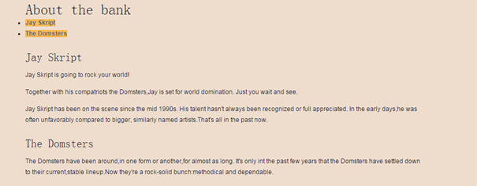
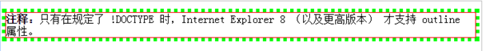
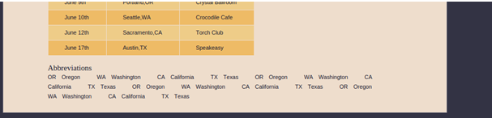
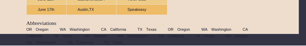
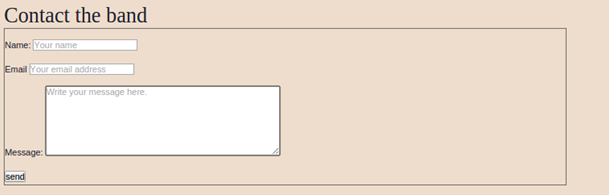

Jay乐队网站
综合实践——Jay乐队网站
前言:首先觉得这本书好好好好好，反正对这本书的紧密思维产生了深深的敬意，它的中心思想值得程序员们的肯定，一定要考虑到程序代码的可用性,实现平稳退化以及渐进增强。本实践参考书本《Javascript DOM编程艺术》Jeremy Keith Jeffrey Sambells著 源码可到www.friendsofted.com搜索本书的主页后下载。
主要功能：home 雪碧图，图片滑动； about 文本显示与隐藏； photots 图片放大； live 表格，缩略词提取； Contact 表单，Ajax提交表单。
一、home.html
1.编写prepareSlideShow()，准备图片播放的位置。
第一次代码：
function prepareSlideShow(){
if(!document.getElementById) return false;
var intro = document.getElementById("intro");
var slideShowDiv = document.createElement("div");
slideShowDiv.setAttribute("id", "slideshow")
var preview = document.createElement("img");
preview.setAttribute("src", "images/slideshow.gif");
preview.setAttribute("alt", "a glimpse of what awaits you");
preview.setAttribute("id", "preview");
slideShowDiv.appendChild(preview);
insertAfter(slideShowDiv,intro);
}
图片显示在文字上方，而且没有按照 150px*150px去显示。
错误：style设置写成了属性设置，缺少overflow设置，超出div的内容进行
隐藏才能起到限定大小框定内容的效果。 修改后代码：
slideShowDiv.style.width = "150px";
问题：图片div是插入到p后面，为什么会在前面。
原因：insertAfter函数最后的targetElement缺少nextSibling。
当不是最后一个节点时候应该插到下一个节点的前面。(DOM只实现了insertBefore方法)
slideShowDiv.style.height = "150px";
slideShowDiv.style.overflow = "hidden";
function insertAfter(newELement,targetElement){
上面代码需要注意一个问题就是，IE不会把换行符作为空文本节点处理，但是Chrome等
浏览器会把换行符当做空白文本节点。所以在节点前插入节点的地方不要有换行符，不
然需要处理。
var parent = targetELement.parentNode;
if(parent.lastChild == targetElement){
parent.appentChild(newElement);
}else{
parent.insertBefore(newElement,targetElement.nextSibling);
}
}
2.接下来要为链接添加onmouseover监听时间,控制图片显示的位置： 初始代码
for(var i = 0; i < links.length ; i++){
要将移动函数添加到onmouse事件。
links[i].onmouseover = function(){
destination = this.getAttribute("href");
if(destination.indexOf("home.html") != -1){
moveElement("preview",0,0,1)
}
if(destination.indexOf("about.html") != -1){
moveElement("preview",-150,0,1)
}
if(destination.indexOf("photos.html") != -1){
moveElement("preview",-300,0,1)
}
if(destination.indexOf("live.html") != -1){
moveElement("preview",-450,0,1)
}
if(destination.indexOf("contact.html") != -1){
moveElement("preview",-600,0,1)
}
}
3.moveElement注意事项
//每次移动前需要清除前一次浮动，避免图片移动跟不上鼠标的移动导致的图片变化
if(elem.movement){
clearTimeout(elem.movement);
}
//将setTimeout的返回值作为属性赋值给element
var repeat = "moveElement('" + elementID +"'," + finalx + "," + finaly + "," + interval + ")";
elem.movement = setTimeout(repeat,interval);
二、about.html
1、效果如下图：

Javascript部分的重点是链接，点击“Jay Script”时只显示“Jay Script”的内容。 首先需要一个函数：隐藏除了被点击链接外的其他内容showSection； 然后将链接与这个函数联系起来prepareInternalnav。 写好了代码以后出现了问题，只显示第二部分的代码。问题如下图所示， 代码中href=”#jay”而输出来以后得到的href属性其实是“当前地址+#...”， 随意截取字符串的时候要先找到”#”的位置，然后从”#”开始截取id. （事实上array = string.split(character);方法就不用这么麻烦了）
function prepareInternalnav(){
if(!document.getElementsByTagName) return false;
if(!document.getElementById) return false;
var article = document.getElementsByTagName("article");
if(article.length == 0) return 0;
var nav = article[0].getElementsByTagName("nav");
if(nav.length == 0) return 0;
var links = nav[0].getElementsByTagName("a");
for (var i = 0 ; i < links.length ; i++) {
var sectionId = links[i].getAttribute("href").split("#")[1];
if (!document.getElementById(sectionId)) continue;
if(i != 0)document.getElementById(sectionId).style.display = "none";
links[i].destination = sectionId;
links[i].onclick = function(){
showSection(this.id);
return false;
}
}
}
2、遇到的问题及解决
(1) “em”是什么单位？ 答：字体的倍数单位。浏览器默认字体是16px。
(2) array = string.split(charater);
(3) console.log(typeof showSection) 输出 function
console.log(typeof showSection(sectionId)) 输出undefined
函数名的类型是“function”，当传入参数执行时候其类型是返回值类型,调用函数了。
(4)outline是什么？ outline （轮廓）是绘制于元素周围的一条线，位于边框边缘的外围，可起到突出元素的作用。如下图：

(5)setTimeout用法 ： setTimeout(“functionName”,internalTime);
三、photos.html
1.通过ul列表(设置ul li的格式为display:inline)列出小图片,图片放在a标签中.
2.js代码
function preparePlace(){
if(!document.getElementById) return false;
if(!document.getElementsByTagName) return false;
var photoContainer = document.createElement("div");
photoContainer.setAttribute("id","photoContainer");
var imagegallery = document.getElementById("imagegallery");
insertAfter(photoContainer,imagegallery);
var img_place = document.createElement("img");
img_place.setAttribute("id","display_img");
img_place.setAttribute("src","");
img_place.setAttribute("alt","请选择图片")
photoContainer.appendChild(img_place);
}
function isShow(picture){
if(!document.getElementById("display_img")) return true;
var img_place = document.getElementById("display_img");
img_place.setAttribute("src",picture);
return false;
}
function display(){
if(!document.getElementById) return false;
if(!document.getElementsByTagName) return false;
var imagegellery = document.getElementById("imagegallery");
var links = imagegellery.getElementsByTagName("a");
console.log("links " + links);
for(var i=0 ; i < links.length ; i++){
console.log("click monitor");
links[i].onclick = function(){
var link_img = this.getAttribute("href");
return isShow(link_img);
}
}
}
先创建标签div和img来存放图片,将div标签查到imagegellery后面.给所有的图片链接 添加监听事件,修改img的src属性来改变显示的图片. 注意一个问题,不能在监听 事件中创建img,否则点击一下出一张图片点一下一张图片,不是只显示一张图片. 需要通过document.getElement得到已经创建的img元素修改src属性.
3.代码优化
function preparePlaceholder(){
if(!document.createElement) return false;
if(!document.createTextNode) return false;
if(!document.getElementById) return false;
if(!document.getElementById("imagegallery")) return false;
var placeholder = document.createElement("img");
placeholder.setAttribute("id","placeholder");
placeholder.setAttribute("src","images/placeholder.gif");
placeholder.setAttribute("alt","my image gallery");
var description = document.createElement("p");
description.setAttribute("id","description");
var desctext = document.createTextNode("Choose a picture");
description.appendChild(desctext);
var gallery = document.getElementById("imagegallery");
insertAfter(description,gallery);
insertAfter(placeholder,description);
}
function showPic(whicphic){
if(!document.getElementById("placeholder")) return true;
var placeholder = document.getElementById("placeholder");
var source = whicphic.getAttribute("href");
placeholder.setAttribute("src",source);
if(!document.getElementById("description")) return false;
var description = document.getElementById("description");
if(whicphic.getAttribute("title")){
var title = whicphic.getAttribute("title");
}else{
title="";
}
if(description.firstChild.nodeType == 3){
description.firstChild.nodeValue = title;
}
return false;
}
function prepareGallery(){
if(!document.getElementById) return false;
if(!document.getElementsByTagName) return false;
if(!document.getElementById("imagegallery")) return false;
var imagegellery = document.getElementById("imagegallery");
var links = imagegellery.getElementsByTagName("a");
for(var i=0 ; i < links.length ; i++){
links[i].onclick = function(){
return showPic(this);
}
}
}
加入了description,使用了p标签和文本节点. 对所有可能不存在的元素placeholder,imagegallery,文本节点都做了判断.
四、live.html
1.写好页面和布局代码
2.添加分行事件(奇数行,偶数行通过背景颜色来区分)和高亮事件(鼠标放到的行显示高亮颜色) 在添加高亮事件的过程中,注意添加了onmouseover监听事件后还需要onmouseout事件,通过属性 的方式记录原来的className.
rows[j].oldClassName = rows[j].className;
rows[j].onmouseover = function(){
addClass(this,"highlight");
}
rows[j].onmouseout = function(){
this.className = this.oldClassName;
}
3.添加缩略词说明模块
这里用到了dl,dt,dd标签,需要注意一下.dl用来创建一个普通的列表,dt用来创建列 相中的上层项目,dd用来创建列表中最下层的项目.dt,dd必须在dl标志对之间. 在dl的样式设计时,通过设计dt的float属性为left影响后面的dd使dt与dd在同 一行显示,然后设置dd的float属性为left,使得下一个dt与本dd在同一行, 最后整个列表显示在一行.

注意到一点dl的属性设置了overflow:hidden，如果没有设置overflow:hidden;会出现下面的效果，部分 文字不被包裹在article中了，如下图

好了，经查询，overflow:hidden;的作用是清除浮动。 父块没有设置指定的高宽，当子块设置为浮动后，原本包裹子块的父块的高度塌陷 消失， 这时给父块设置overflow:hidden就能清楚浮动造成的影响，使父块重新包 裹子块。参考(http://www.zhihu.com/question/30938856 )。 引出BFC块级格式化 上下文，待了解学习(http://www.cnblogs.com/lhb25/p/inside-block-formatting-ontext.html) 。
书上的方法还用到了javascript的数组,注意javascript的array数组下表可以是key,不一定是数字.实践中我没用数组,我觉得多一次循环没有必要. 最后可以学习的一点就是,获取<abbr>标签内文本使用的方法abbr.lastChild.nodeValue通过最后一个子节点获得文本. 感觉该功能还可以改进一点,就是加入去从功能.然后终于明白了为什么要加入array数 组了,就是去从的意思!!!!!!!!!!!!!!姜还是老的辣,不要轻易去怀疑先贤的圣明。
五、contact.html
1.这个网页最重要的内容是表单,接触到了一个以前没用的标签fieldset,fieldset可 将表中的部分元素进分组,将表单中内容的一部分进行打包,生成一组相关表单的字段. 当一组表单元素放到<fieldset>标签内时,浏览器会以特殊的方式来显示它们,它们可 能有特殊的边界,3D效果, 或者甚至可创建一个子表单来处理这些元素.下图的框就是 fieldset的效果.

当然,可以去掉fieldset的框,设置fieldset{border:0;}.
2.表单input有个required属性,设置required=”required”使文本框必须有输入,是html5的元素. w3school表示所有浏览器都不支持required,但经测试IE不支持,chrome是支持.
3.form对象
有些元素的属性比DOM核心中定义的要多.例如文档中的每个表单元素都是个form对象, 每个form对象都有一个elements.length属性.这个属性返回表单中包含的表单元素的 个数.form.elements.length.该属性之关注哪些属于表单元素的元素, 如input,textarea等等.
4.验证脚本
(1)验证脚本写的不好,不如没有验证.
(2)验证不可完全依赖javascript.客户端验证并不能取代服务器端的验证. 即使有了JavaScript验证,服务器端照样还应该对接收到的数据进行再次验证.
(3)客户端的验证在于帮助用户填好表单,避免他们提交未完成的表单,从而节省 他们的时间.服务器端验证目的在于保护数据库和后台系统的安全.
5.Ajax技术（重点）
(1)XMLHTTPRequest请求
以往的请求都是由浏览器发出,通过这个对象,JavaScript可以自己发送请求, 同时自己处理相应.在IE中创建新的对象用 var request = new ActiveXObject(“Msxml2.XMLHTTP.3.”). 其他浏览器创建新对象var request = new XMLHttpRequest().
function getHttpObject(){
XMLHTTPRequest对象的创建类似于XMLDocument对象的创建。
不过一个是MSXML2.DOMDocument，一个是MSXML2.XMLHTTP。
if(typeof XMLHttpRequest == 'undefined'){
XMLHttpRequest = function(){
try{return new ActiveXObject("Msxml2.XMLHTTP.6.0");}
catch(e){}
try{return new ActiveXObject("Msxml2.XMLHTTP.3.0");}
catch(e){}
try{return new ActiveXObject("Msxml2.XMLHTTP");}
catch(e){}
return false;
}
}
return new XMLHttpRequest();
}
(2)提交表单
监听表单的onsubmit事件，如果通过ajax提交了表单，就不再走正常的表单提交流程。 否则，按正常的表单提交进行。
thisform.onsubmit = function(){
if(!validateForm(this)) return false;
var article = document.getElementsByTagName("article")[0];
if(submitFormWithAjax(this,article)) return false; //如果ajax可以执行,则不再提交表单
return true;
}
(3)ajax提交表单
当用户提交表单时，表单中的数据（每个表单中的名字和值）编码到一个字符串中并随请求发送。 扩展：以请求主体分类，AJAX的POST请求主要包括表单编码的请求；JOSN编码的请求（利用JSON.stringify(data) 进行对象序列化）；XML编码的请求(document.implementation.createDocument("","query",null)); 上传文件；mutipart/form-data请求
for(var i = 0 ; i < whichform.elements.length ; i++){
element = whichform.elements[i];
if(element.type != 'submit') {
dataParts[i] = element.name + '=' + encodeURIComponent(element.value);
}
}
var data = dataParts.join('&');